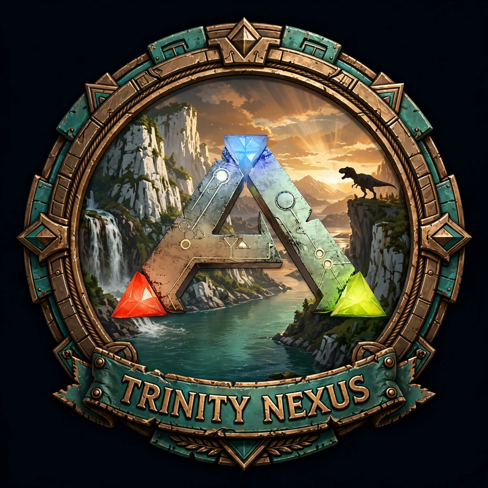

TRINITY NEXUS
Valguero · resource atlas
Trinity Nexus
· Valguero Resource Map
← Console
Atlas data from the ARK wiki (Valguero, Evolved) — works entirely on its own, no server save needed.
Dino spawn zones:
Off — pick a creature
Resources, caves, drops, nests and the rest — toggle layers at the top-right of the map. Click any marker for details.
Your markers:
Lat
Lon
For
Add marker
Click the map to fill the coordinates. Each person's markers and the Tribe's are layers at the top-right.